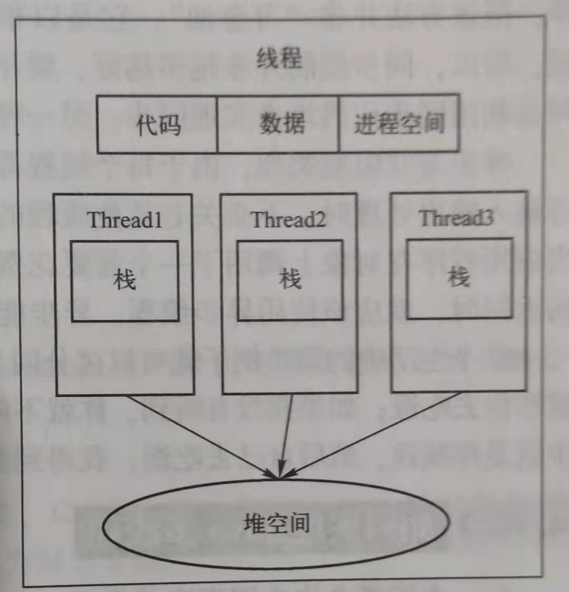

一、What’s 多线程？
🐱💻 程序执行过程中能执行程序代码的一个执行单元。
1.进程与线程的不同：
进程是正在执行的程序。线程是程序执行的最小单元。进程可以包含多个线程，各线程间共享内存空间(代码段、数据段、堆空间),但是各个线程有自己的堆空间.
他们两个本质的区别是**是否单独占有内存地址空间及其它系统资源（比如I/O）
进程是操作系统进行资源分配的基本单位，而线程是操作系统进行调度的基本单位，即CPU分配时间的单位 。
1.1 多进程的方式也可以实现并发，为什么我们要使用多线程？
多进程方式确实可以实现并发，但使用多线程，有以下几个好处：
-
进程间的通信比较复杂，而线程间的通信比较简单，通常情况下，我们需要使用共享资源，这些资源在线程间的通信比较容易。
-
进程是重量级的，而线程是轻量级的，故多线程方式的系统开销更小。
1.2 上下文切换
上下文切换（有时也称做进程切换或任务切换）是指 CPU 从一个进程（或线程）切换到另一个进程（或线程）。上下文是指某一时间点 CPU 寄存器和程序计数器的内容。
寄存器是cpu内部的少量的速度很快的闪存，通常存储和访问计算过程的中间值提高计算机程序的运行速度。
程序计数器是一个专用的寄存器，用于表明指令序列中 CPU 正在执行的位置，存的值为正在执行的指令的位置或者下一个将要被执行的指令的位置，具体实现依赖于特定的系统。
举例说明 线程A - B
1.先挂起线程A，将其在cpu中的状态保存在内存中。
2.在内存中检索下一个线程B的上下文并将其在 CPU 的寄存器中恢复,执行B线程。
3.当B执行完，根据程序计数器中指向的位置恢复线程A。
CPU通过为每个线程分配CPU时间片来实现多线程机制。CPU通过时间片分配算法来循环执行任务，当前任务执行一个时间片后会切换到下一个任务。
但是，在切换前会保存上一个任务的状态，以便下次切换回这个任务时，可以再加载这个任务的状态。所以任务从保存到再加载的过程就是一次上下文切换。
上下文切换通常是计算密集型的，意味着此操作会消耗大量的 CPU 时间，故线程也不是越多越好。如何减少系统中上下文切换次数，是提升多线程性能的一个重点课题。
2.我们是如何使用多线程的呢？
(1)继承Thread类，并重写run方法；
(2)实现Runnable接口的run方法；
、线程的状态：
| NEW | 一个尚未启动的线程的状态。也称之为初始状态、开始状态。线程刚被创建，但是并未启动。还没调用start方法。MyThread t = new MyThread()只有线程象，没有线程特征。 |
|---|---|
| RUNNABLE | 当我们调用线程对象的start方法，那么此时线程对象进入了RUNNABLE状态。那么此时才是真正的在JVM进程中创建了一个线程，线程一经启动并不是立即得到执行，线程的运行与否要听令与CPU的调度，那么我们把这个中间状态称之为可执行状态(RUNNABLE)也就是说它具备执行的资格，但是并没有真正的执行起来而是在等待CPU的度。 |
| BLOCKED | 当一个线程试图获取一个对象锁，而该对象锁被其他的线程持有，则该线程进入Blocked状态；当该线程持有锁时，该线程将变成Runnable状态。 |
| WAITING | 一个正在等待的线程的状态。也称之为等待状态。造成线程等待的原因有两种，分别是调用Object.wait()、join()方法。处于等待状态的线程，正在等待其他线程去执行一个特定的操作。例如：因为wait()而等待的线程正在等待另一个线程去调用notify()或notifyAll()；一个因为join()而等待的线程正在等待另一个线程结束。 |
| TIMED_WAITING | 一个在限定时间内等待的线程的状态。也称之为限时等待状态。造成线程限时等待状态的原因有三种，分别是：Thread.sleep(long)，Object.wait(long)、join(long)。 |
| TERMINATED | 一个完全运行完成的线程的状态。也称之为终止状态、结束状态 |